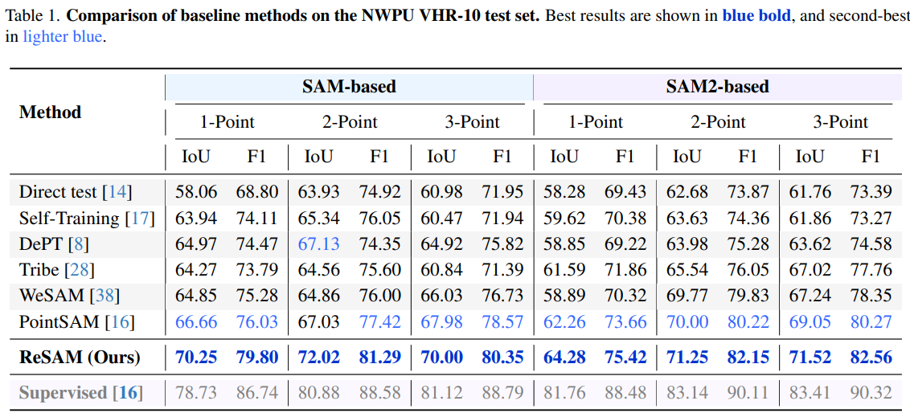
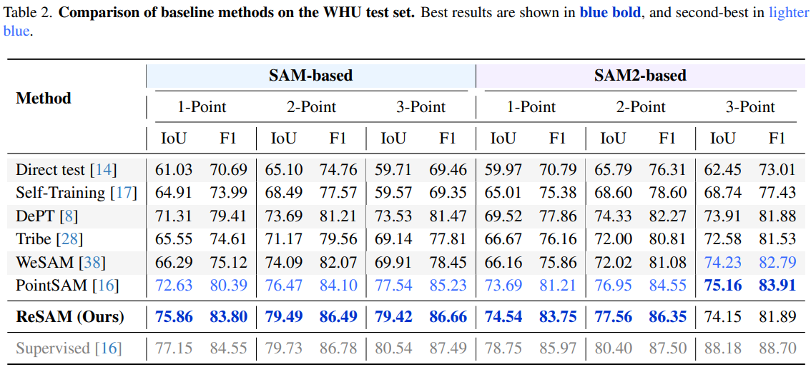
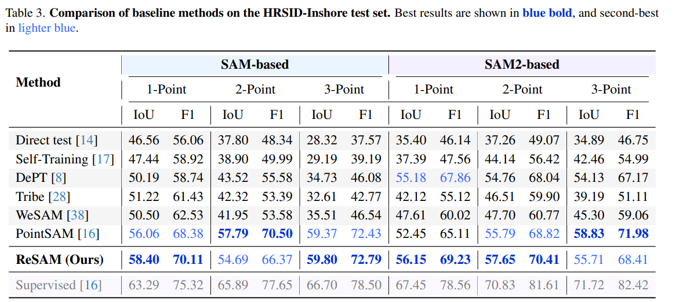
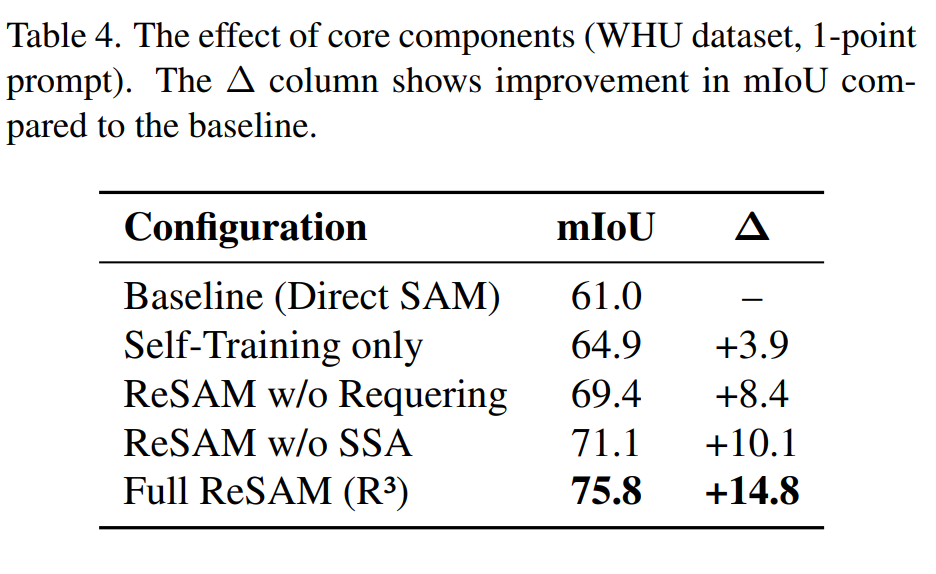
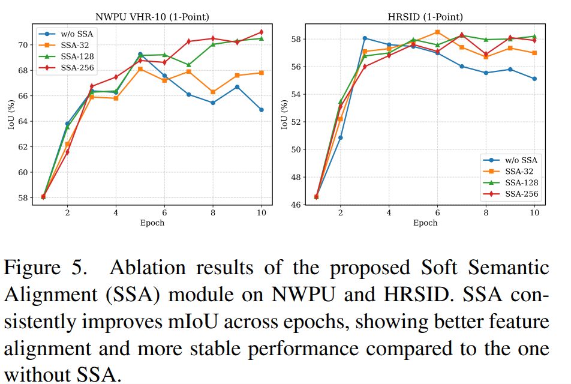
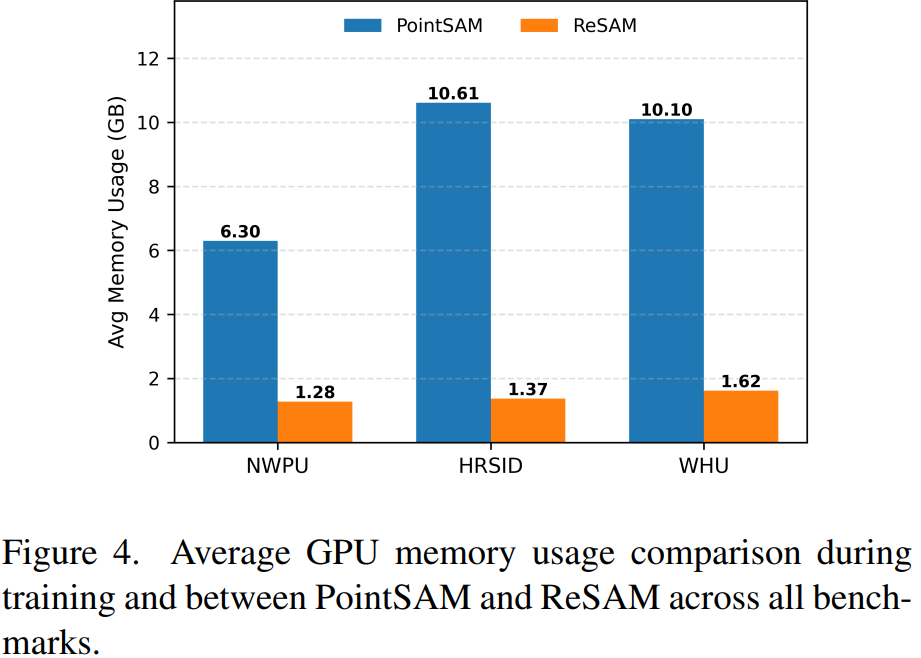

Interactive segmentation models such as the Segment Anything Model (SAM) have demonstrated remarkable generalization on natural images, but they perform suboptimally on remote sensing imagery (RSI) due to severe domain shifts and the scarcity of dense annotations. To address this limitation, we propose a pointsupervised, self-prompting framework that adapts SAM to RSI using only sparse point annotations. Our method employs a Refine–Requery–Reinforce loop, in which coarse pseudo-masks are generated from initial points (Refine), improved with self-constructed box prompts (Requery), and embeddings are aligned with Soft Semantic Alignment (SSA) to mitigate error propagation (Reinforce). Without relying on full-mask supervision, our approach progressively enhances SAM’s segmentation quality and domain robustness through self-guided prompt adaptation. We evaluate our proposed method on three RSI benchmark datasets, WHU, HRSID, and NWPU VHR-10, demonstrating that it consistently outperforms pretrained SAM and recent pointsupervised segmentation methods. Compared to the fully supervised model, our approach reduces the performance gap to 1.3% (WHU), 4.9% (HRSID), and 8.5% (NWPU) while relying only on 1-point annotations. Our results demonstrate that self-prompting and semantic alignment provide an efficient path towards scalable, point-level adaptation of foundation segmentation models for remote sensing applications
ReSAM adapts SAM with LoRA on the image encoder and operates on weak–strong dual views. Given sparse positive point prompts on a weakly augmented image, SAM produces initial instance masks. In the Refine stage, confident pixels are selected via entropy filtering and overlapping regions are removed so each pixel belongs to a single instance. In Requery, minimal bounding boxes from refined masks are used as self-generated prompts to obtain higher-quality pseudo labels. In Reinforce, SSA aligns instance embeddings from weak and strong views using FIFO queues and a soft cosine loss, combined with focal, Dice, and IoU losses for mask quality.
ReSAM is evaluated on three RSI benchmarks with 1-, 2-, and 3-point supervision per instance. Results below report SAM-based backbones (1-point setting highlighted in the paper). ReSAM surpasses PointSAM and other baselines across datasets, with steady gains as more points are provided.



Each component of the $\mathrm{R}^3$ loop contributes to overlap suppression and stable pseudo labels. On WHU with 1-point prompts, full ReSAM reaches 75.8% mIoU (+14.8 over direct SAM). SSA with queue size 128 improves training stability and final accuracy on NWPU and HRSID compared to training without SSA.



@inproceedings{subhani2026resam,
title={ReSAM: Refine, Requery, and Reinforce: Self-Prompting Point-Supervised Segmentation for Remote Sensing Images},
author={Subhani, Muhammad Naseer},
booktitle={Proceedings of the IEEE/CVF Conference on Computer Vision and Pattern Recognition (CVPR)},
year={2026}
}
Preprint: @article{subhani2025resam, ... journal={arXiv preprint arXiv:2511.21606}, year={2025}}